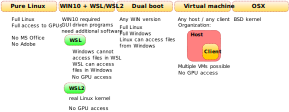

%%html
<style>
code.lblue{
color: #1371a9;
}
pre,
code.wlblue{
color: #1371a9;
background-color: white;
}
code.com{
color: #f603ed;
}
b.lblue{
color: #1371a9;
}
div.int{
margin-left: 40px;
}
div.red{
margin-left: 10px;
border: 1px solid red;
padding: 10px;
}
div.clblue{
margin-left: 10px;
border: 1px solid #1371a9;
padding: 10px;
}
div.try{
margin-left: 10px;
border: 1px solid #1371a9;
padding: 10px;
}
div.info{
margin-left: 10px;
border: 1px solid #1371a9;
padding: 10px;
}
table.lblue{
margin-left: 2px;
border: 1px solid #1371a9;
padding: 10px;
}
</style>
Lecture 4¶
Learning goals:
To understand the main difference between Linux and Windows/OSX
To understand the main advantages and disadvantages of Linux
To understand the difference between normal and superuser (root)
To learn some basic terminology
Keywords: Linux CLI commands, finding help on commands, wildcards
Associated material: Cheat sheet of the most common Linux commands.
Linux - the basics¶

|
| Figure: Tux, the mascot of the Linux kernel. Figure: Wikpedia, CC0 1.0 Universal. Original Tux by Larry Ewing in 1996. |
Linux what is it good for?
"War, what is it good for? Absolutely nothing! Ho!" -Elaine Benes in Seinfeld
It is time to discuss Linux. Linux is open-source software, thousands are volunteer programmers particpate in the development. As already discussed above, it is the dominant operating system in all HPC.
Before discussing Linux further, let’s list some of the advantages and disadvatages.
Advantages of Linux¶
Some of the advantages of Linux include:
Excellent performance and low resource requirements (lightweight)
Very flexible and portable
Functionality
Open source
Customizability
Stability
Connects nicely with Android cell phones for file transfer (appears easier than on Windows).
Disadvantages of Linux¶
Sometimes there is a lack of drivers for the very latest hardware
Some software such as Microsoft Office and Adobe Photoshop are not available
On laptops, batteries drain faster although there have been some very good recent developments
Linux: Brief overview¶
The Dec 29, 2003 entry for Linux in the Urban Dictionary reads:
linux n. An OS that is awesome for geeky programmers. For everyone else, it is much too difficult to install and use.
Linux will always have a small installed base on desktop computers, because the only way it can become mainstream is if it loses the difficulty of installation and use. The only way to attain that is to completely change what linux is.     - by truth teller December 29, 2003
This expresses well the still remaining most common misconception is that Linux is only for coders and geeks, and that is cumbersome to install and use. While in the early days of Linux, and to a degree even in the early 2000’s, that was true, at this time all that is absolute and pure rubbish. Modern Linux distributions are easy and quick to install, easy to maintain, extremely stable and for normal users, there is no need to use the feared command line or terminal. Anecdotally I can say that having installed Windows, OSX and Linux simultaneously side-by-side, the Linux system was up and running with full functionality hours before the other two.
The persistent myth of Linux being difficult to install and almost impossible to use for anyone but geeky programmers is very unfortunate. It is, as a matter fact, much faster and easier to install than, say, Windows or OSX (anyone who claims otherwise has not installed those two from scratch; in addition, the Windows and OSX updates tend to be very large, the latest at the time of writing this: MacOS update from Catalina to the new Big Sur is of size 12.18 GB that needs to be downloaded over the net and even the latest Catalina security update is 2.84 GB and it took over 35 minuts to install it on relatively new iMac). The user experience is also as pleasant as with the other two main operating systems, and, importantly for the everyday user: there is no need for the terminal or command line. Everything can be run in a menu-driven manner as with Windows and OSX. In our case that is different since the terminal window is power user’s best friend.
In brief: Any modern Linux distribution works at least as well as Windows or Mac as the daily driver. As a concrete low-brow example, let’s use anecdotal evidence: I installed (Budgie Linux, one of the Ubuntu flavours) for my 79 old dad and he prefers it over Windows and Mac. He has never used the command line and for any normal user there is no need.
Of course the example above is a bit silly. In that case, all the software that was needed (Skype, Zoom, Firefox, word processor, Spotify and email) was readily available through the Software center. There is software that needs to be installed through command line and some repositories (like Flatpak) must be initiated through command line. What the above says, however, the user experience is good and may even be preferrable to other OSs, but that is, naturally, totally subjective.
As desribed above, there are - of course - some problems. Whether or not they are significant for you regarding your daily use, is yours to determine. There are plety of problems with Windows and Mac as well but they are not discussed here.
But really, who uses it?¶
Below are some examples, please see the links for more details.
Desktop market share is not enormous, around 2-3% according to various sources. Although the real number may be somewhat higher since Linux is typically installed afterwards. For example, my computers have all shipped with Windows or OSX pre-installed yet with the exception of one, they have all become either pure Linux or dual boot.
In High Performance Computing (HPC), Linux has absolute dominance: 100% - every single computer - in the TOP500 list of world’s fastest computers uses Linux.
Other operating systems such Android and Chrome OS are based on Linux
Entertainment: Almost all of the major film studies use Linux. This includes names such as Pixar and DreamWorks - as early as 1997 the movie Titanic was produced on Linux servers.
TV’s (including manufacturers such as Samsung and LG), entertainment systems such as Kodi, vehicle information systems (manfacturers such as BMW) and such, and the list goes on.
SpaceX and the Jet Propulsion laboratory use Linux
Security applications. Users include various governments such as the USA, Russia and China who have each developed their own Linux solutions.
More information:¶
Summary of some basic issues¶
Linux is generally much safer and less prone for viruses than the other common operating systems.
There are lots of useful tools, including GUI-based word processors, graphics software etc. Most of them also work in Windows and Mac, and it is generally good idea to use cross-platform software.
Linux is more stable, there are no forced updates and no need to boot constantly. As an example, the workstations that my group use are rebooted very seldom, they can easily run half a year without need to reboot.
For computational work, computational chemistry, physics, engineering, humanities and so on, Linux is the best environment and the command line terminal is one of the most important tools. I also repeat what I said above: for the normal user there is no need to touch it.
Brief history of Linux¶
Linux is an independent operating system but it has its roots in Unix. Unix orginated from the Bell Laboratories in 1969.
Linux was created by Linux Torvalds who was an MSc student at University of Helsinki (Finland) at the time. The first version was published by Torvalds in 1991 when he uploaded his operating system to FUNET, the Finnsh University and Research Network ftp server for anyone to download.
Linus Torvalds: The creator of Linux¶

|
| Figure: Linus Torvalds. Figure: Wikpedia, CC. |
Linus Torvalds, born Dec 28, 1969 in Helsinki, Finland. Named after Linus Pauling or/and Linus of Peanuts
Named the kernel of his OS as “Linux”. According to the story, Torvalds himself did not give the name Linux. Rather, it was Ari Lemmke, and IT administrator at FUNET who gave the name without asking Torvalds first; Torvalds had uploaded his new OS to the FUNET server using the name Freax, but Lemmke didn’t like the name and changed it to Linux.
He still has the ultimate control as what is included in the Linux kernel. He is also known to express himself quite sharply in the Linux discussion groups - no need to interpret whether something is positive or negative.
MS Thesis (Unversity of Helsinki, Finland): "Linux: A Portable Operating System" Probably the most influential MSc thesis in any field ever.
Here is a link to his thesis
Torvalds is also the creator of Git
Was awarded the Millenium Technology Prize in 2012. The Millenium Technology Prize is worth 1 million Euros. Previous recipients in the field of computers include Sir Tim Berners-Lee, the inventor of the World Wide Web.
Torvalds has been named as one of the world’s most influential people by the Time Magazine several times (here is the article from 2004)
Some talks and videos by and of Linus Torvalds.
The Code: Story of Linux documentary (subititles in 12 languages)
Computer History Museum: The Origins of Linux—Linus Torvalds (2008)
Linus Torvalds talking with Aalto University students on 23 October, 2012
The infamous NVIDIA talk: Linus Torvalds: Nvidia, F**k You!
This incident became famous but the full talk (at Aalto University, Helsinki) is very interesting: Aalto Talk with Linus Torvalds [Full-length]
Current state of Linux and Linux distributions¶
There are a lot of distributions to choose from. Here, we will use Ubuntu-based Linux. While most of the instructions are distribution agnostic, it may be easier to install one of the Ubuntu-based distributions as will be discussed below; the most apparent difference to the end user is that the different distributions have different package management systems and thus the precise commands as how something is done when we do command line installation may be different. For an advanced user that is not an issue. As for releases, there are also rolling releases and standard releases. Here, we use standard release (20.04 LTS to be precise), that is, not rolling.
More information:¶
What is the command line?¶
In this course we will use some GUI driven software (VMD), software that is run through a web browser (Jupyter Lab/Notebook) and, what may come as a new experience, we will rely heavily on the command line terminal or console.
In general, there are two kinds of user interfaces:
Graphical users interfaces (GUI)
Command line interfaces (CLI)
The former one is quite obvious. GUIs are generally menu-driven and the operations consist of clicking and dragging-and-dropping. In Linux/Unix, the GUI is called X-windows. While convenient and intuitive for lots of tasks, the drag-and-drop operations and clicking are not enough for computing and we need a command line interface.
The command line provides the fundamental way to interact with the system:
To perform tasks that are impossible using a GUI
Create, access, copy, move and edit files and directories
Execute commands
And of particular interest here: To run computer simulations.
In large-scale HPC systems (such as Compute Canada’s systems), only command line is provided
Scripting and creating new commands and aliases
The command line is fundamental for system administration
If you have used the basic terminal application in Windows, the Windows terminal is based on MS-DOS, whereas in OSX and Linux/Unix the terminal uses Linux/Unix commands. Importantly, the MS-DOS and Linux/Unix commands are not compatible. The MS-DOS based terminal is not useful for computation as it doesn’t provide the necessary functionailities and tools. This means that in the case you use Windows, you must install WSL/WSL2 (Windows subsystem for Linux), Linux in Virtual Machine or dual boot Windows/Linux. Below is a summary that tells what you need to do depending on your current operating system.
The first step is to determine if one needs to install new software regarding the operating system. Other software requirements such as compilers and python will be discussed later for consistency.
What do we need to do?¶
Independent of the operating system:
We need to set up command line terminal and it will be used extensively throughout the course
All of them are Linux (well… technically the OSX one is based on Free BSD but that doesn’t make any practical difference here).
This is what we will do:
Set up command line terminal
Learn the basics
Install the pre-requisites for Gromacs, VMD and Python
Install Gromacs, VMD and Python
Linux installation¶
Now that you have tested at least one Linux distribution from a USB, it is time to install. There are four possible choices depending what you want. Each has their own advantages and disadvantages. The figure summarizes the main options and lists some of their features.
|  |
| Figure: For the purposes of this course, one needs to have Linux or Mac OSX. There are several different approaches. The figure shows the different options and some of the relevant features. WSL/WSL2 is the fastest to set up. The virtual machine approach is versatile: any host-client combination can be used and one can have multiple clients. The downside is that enough memory is required since RAM is shared between the operating systems when two of them are run simultaneously. In addition, the virtual machine side has no access to the GPUs. Since any host-client combination is possible, one can also have a Linux host and Windows client. That way one can use native MS Office while running Linux and without the need to reboot (as is the case with dual boot). |
Linux options¶
Requirements:
Linux is not very resource hungry. As minimal requirements for the latest stable release (20.04LTS) Canonical recommends 4GB of RAM, 25 GB of HD, and 2 GHz dual core processore. This means that if there is an older unused computer hanging around, it will probably run Linux just fine. Practical examples: I have installed Linux (Ubuntu Budgie 20.04 LTS) on an 2007 iMac with 4GB memory and it runs fine. There are also special lightweight Linux versions that run perfectly well even on older netbooks (I have tried some versions on an old Toshiba netwook with 2 GB of memory). The advantage of setting up Linux on an old unused computer (laptop or desktop) is that that provides and clean install and there is no danger of messing up with your current system.
Advantages: Clean installation of full Linux.
Disadvantages: If you need software that runs only on Mac or Windows.
Options: If you have enough RAM, it is always possible to install Windows using virtual machine insde Linux (see the Figure).
Instructions: New computer came with windows pre-installed but you want Linux only
Dual boot. Allows you to select at boot time which OS you want to use.
Requirements:
You need to have enough strorage space depending on your needs. Examples: if one doesn’t need to store large files, a 256Gb SSD works just fine. Linux is less resource-hungry than Windows or Mac, so if your computer runs one of them, there should be no issues.
Advantages:
Windows and Linux are clearly separated each of them being a full native installation.
Disadvantages:
You need to boot to switch from Linux to Windows or vice versa (but then again, that is quick).
Some manufacturers ship Windows installed with BitLocker turned on. If that is the case, things become more complex as the HD/SSD tends to be fragmented and it is not necessearily trivial to defragment it.
Additional:
The Linux side can access the files on the Windows side but not vice versa.
Notes:
While it is possible to install Linux first and add Windows after, it is highly recommended to have Windows first and then add the Linux part. That is usually the more natural order since most computers ship with Windows pre-installed.
Install Linux in a virtual machine inside your current OS.
Requirements: Since memory is shared between the two oprating systems when the virtual machine is turned on, one needs enough RAM. Typically 16 Gb seems to work fine, 12 Gb is ok and 8 Gb not quite enough.
Advantages:
Allows you to install full Linux (or other operating systems, including different versions) in a contained environment without need to repartition the hard drive/SSD.
Disadvantages:
As discussed above, memory shared between the two OSs when virtual machine is turned on. The practical lower limit for RAM is 12 Gb.
Virtual machine doesn’t allow access for GPUs (if you don’t have discrete GPU, then this is not an issue)
If running Windows 10, install Linux using WSL/WSL2 (WSL=Windows Subsystem for Linux). This is different from the three options below in that you don’t automatically get the GUI Linux tools, but just the command line terminal. It is possible to use GUI-based application as well, but for that one has to install an emulator for the X-windows environment.
Important: For WSL, you must have Windows 10 and for WSL2 the only the following Windows 10 versions are compatible: version 2004 (May 2020), version 1909 (Nov. 2019) and version 1903 (May 2019).
- Advantages: Installation of WSL is straightforward and WSL is supported by Microsoft. Installation is also very quick.
- Notes:
- WSL gives a CLI but no GUI. In practise you will have Windows and Linux on your system running at the same time.
- Linux does have access to your files on the Windows side *but* Windows has no access to the files on the Linux side. All Linux CLI tools work well.
- GPU computing: WSL has no access to the GPU(s).
Linux basics¶
Now it is time to discuss some of the Linux basics. This description does not aim to be complete, but rather practical in terms of pointing out the difference between Linux, Windows and OSX. The one item that - based on experience - tends to cause a lot of confusion so we start from there.
Linux file system in brief¶
Important: In Linux, file names and directory names are case sensitive. This is not the situation in Windows or OSX.
This section provides a brief introduction to the Linux file system. The emphasis on giving an idea of the file system and its structure to those who have little experience using Linux or have not used Linux before.
The Figure below shows a sketch of the file structure. The top-level directory, called the root directory is called / and the directories under it are referred, for example, as /home where the slash at the beginning refers to the root directory: thus, /home says that the directory home is located at the first level under the root directory. If we have a user sam, then her home directory would be located in /home/sam, that is, it is at the second level below the root directory.
Note that if you are running Linux using WSL or WSL2, this is how your Linux part is organized. The organization is also very similar in OSX. The most notable difference is that the user directories on a Mac are located under /User
instead of /home.
Important: If you are running pure Linux. Linux through a virtual machine or Mac OSX, you have two ways of accessing your files and the file system:
Using the terminal (=console) window and
using the file manager provide by your GUI. This is, of course, similar to Mac or Windows.
However, if you installed Linux using WSL, your Windows systems does not have access (or “it doesn’t see)” your Linux partition. This means that the only way to access your files is using a console (well… there are other options but that they would require more work).
Figure: Sketch of a typical Linux file system. Orange: this is the location of user directories. For example, if your username issam, this is where your personal files and directories are. The path to this directory would then be /home/sam. Green: The directory /opt is a good place to put your own software (that you compile) such as Gromacs.
|
More about directories¶
Here are brief explanations of some of the directories shown in the Figure. Note that typically all of the directories in the figure contain subdirectories that are named according to their purpose.
/bin
This is where the binaries or executables are located. For example, when you use the terminal to, say, create a new directory, the executable is located in this directory. There is usually no reason to change anything in this directory manually. When installing software using a package manager, this is often the location where the executable is stored. The other common location is /usr/bin.
/home
The user directories are located under /home. For example, if there are two users /sam and /jane in the system, their personal home directories would be located at /home/sam and /home/jane, respectively; for example, their personal download, music, video etc. directories would be then located (and typically created automatically when a user is created) at /home/sam/Downloads, /home/sam/Music, /home/jane/Downloads, and so on.
/usr and /usr/bin
The name of this directry is confusing since it referes to user. However, as described above, the user home directories are kept under /home. Historically, /usr was the location for the users’ home directories. In all modern installations it contains various system files and directories. The directory /usr/bin is a bit special since software (non-operating system related) is put here. For example, web browsers such as firefox or graphics software are usually installed here (=not in /bin which contains mostly OS-related executables.
/boot
This is the location where the system startup files are kept. Unless you know exactly what you are doing, do not touch any of the files in this directory. Doing so may render your system unbootable and unusable, and it may be very difficult to repair. On the positive side, there is no danger in changning these files accidiently since one has to be superuser to do so.
/etc
This may be the most confusing of the system directory names. As the name suggest, it comes from et cetera, Latin for and the rest. Historically, the files and directories that didn’t fit well under other directory categories were put here and hence the name. Nowadays, /etc contains configuration files for the system and some applications. For example, the password-containing (encrypted) passwd file is located in there.
/sbin
This directory contains executable that are not needed by normal users, but the superuser only and hence the name /sbin instead of /bin.
/media
When a USB pen, external hard drive or SD card is connected, this is the location where it shows in the file system
/mnt
In older systems USB devices and SD cards were usually mounted in this directory but now it is more common to use the directory /media as described above. This directory can be used to mount devices manually.
/tmp
All sorts of temporary files stored here by the system.
/dev, sys and /proc
These directories contain devices and system information and there is usually no need to do anything regarding these.
/lib
This directory contains the various libraries that the different software uses.
/opt
This is a directory that can be used to compile and keep various software. For example, this is a good place for installing Gromacs. To do that, one possible way would be to create a new directory called gromacs inside /opt (that is, /opt/gromacs), dowload gromacs in there and compile it. If one wants several different versions of software like Gromacs, one could then create a deeper hierarchy such as /opt/gromacs/gromacs-2016.8, /opt/gromacs/gromacs-2020.3 and so on.
/var
Variable files, that is, files whose content changes are kept here. This includes files that are spooled for printing (in /var/spool and, very importantly, different log files in /var/log. The files include syslog, auth.log and they include information about functioning of the different devices such as Wifi and bluetooth, users logging in and out and failed attempts to login, and so on. When something goes wrong, these files usually contain the information that can help to fix problems.
More information¶
For the afficionados: There are a lot of different file systems, see: Wikipedia: Comparison of file systems
Two user types: superuser and normal¶
“There are only two industries that refer to their customers as ‘users’.”
Edward Tufte, Professor of Political Science, Computer Science and Statistics, Yale.
Normal user: Normal users don’t have privileges to change systems setting or install software at the system level, just in their own private directories. This also means that they cannot accidentally or otherwise delete or modify anything in the system and wreck it. Even if one has superuser privileges ones should always operate as a normal user and use the superuser rights only when absolutely necessary. By default, that is, when you login, you are a normal users. This applies to both Windows and Linux. Superuser rights must be called explicitly in both systems.
Superuser: For comparison: On Windows, the Linux/Unix superuser, also called root, account corresponds to the Adminstrator account. The Adminstrator in Windows and the superuser have the privileges to modify the system files, add and delete users, and install software to the system (normal users can typically install some software in their private directories).
Important: What not to do. Although this may sound trivial, it is impossible to overemphasize that you should never use the superuser privileges when they are not needed for system maintenance. Performing normal operations as the superuser has several risks, the most obvious one is that as a superuser you can delete and modify system files that may wreck your system and make it hard or impossible to recover without full re-installation. Normal users cannot do such damage. The worst damage a normal users can do is to destroy their own files and directories but that does not wreck the system. The situation is the same in all operating systems. Just to give an example: A superuser or a malicous intruder who has somehow acquired the superuser password can wipe out the full system with one single command. This brings in the next important issue.
Important: Password. Passwords should always be chosen such that they are safe. The superuser password is particularly important since if anyone has that, they will be able to control and take over the computer or computer system.
Just for curiosity: The term superuser is a real term.
We will refer to these terms and issues in what follows.
More information¶
What is the Linux shell?¶
Shell is the interface between the user and the operating system.
There are several different types of shell.
bash: This is the shell that is most commonly used in Linux and it is the default shell.
sh: The original Unix shell.
The Mac OSX terminal uses zsh from OSX Catalina onwards and bash prior to Catalina.
Others: tcsh, csh
To check out which shell you are running, type
echo $SHELL
Shell scripts¶
Syntax and conventions¶
File names¶
Linux vs Windows vs Mac OSX¶
Important: In Linux, file names and directory names are case sensitive. This is not the situation in Windows or OSX.